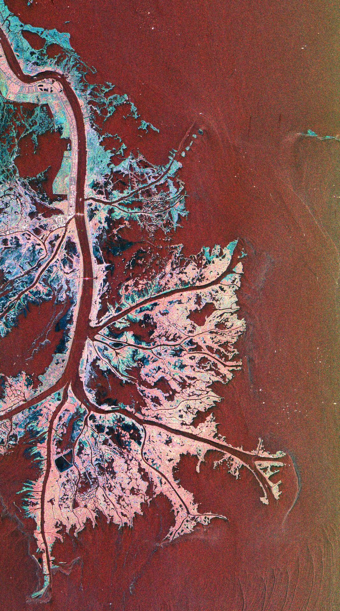
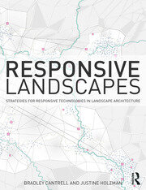
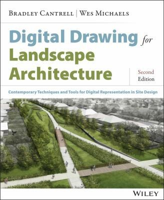
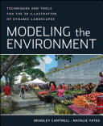

Extends the adaptive epistemology framework into a broader argument about computation and wildness in designed landscapes, treating every intervention as a hypothesis that is tested at territorial scale and building revision into an environmental operating system.

A practice-based investigation into how computational technologies transform the epistemic conditions of landscape design. Argues that adaptive epistemology — design propositions tested in situ through iterative feedback-based knowledge production — is not merely supported by computation, but fundamentally reshaped by it.

An edited volume examining the role of computation in shaping contemporary landscape practice — from parametric modeling and simulation to algorithmic design processes and data-driven ecologies.

On the potentials of interactive systems and adaptive design in landscape architecture. Treats responsiveness not as a technological feature but as a fundamental design disposition — landscape as a medium that senses, adapts, and produces knowledge.
Case studies, symposium, courses →
A comprehensive guide to digital tools and techniques for landscape architects — from representation to simulation. A cornerstone text in landscape architecture education, bridging computational methods and design practice.

A practical guide to digital modeling techniques for environmental and landscape design, covering three-dimensional representation, simulation, and visualization for site-scale and territorial projects.